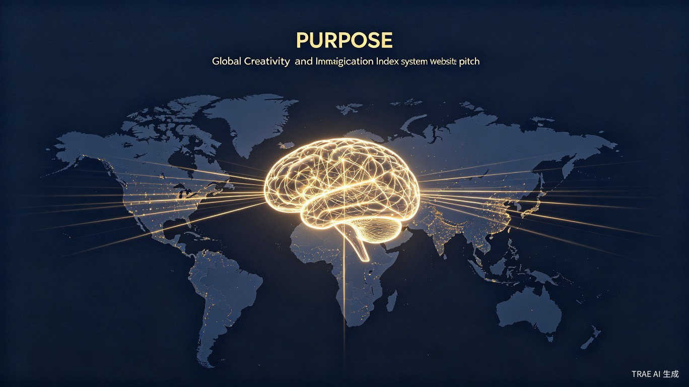

构建未来时代人类创新力的通用衡量标准 —— 让每一份想象力都被看见、被认可、被激励
在人工智能全面普及的未来时代，机械性劳动将被大规模替代，人类的创新性想法将成为最稀缺、最有价值的资产。然而，目前全球范围内缺乏一个权威、公正、被广泛认可的衡量标准来评估个人或组织的想象力与创意能力。
GICI（Global Imagination & Creativity Index，全球想象力与创意指数系统） 旨在填补这一空白，成为全世界最知名、最受认可的创意衡量标准，类似于创意领域的 "IQ 测试" 或 "信用评级"，但更加全面、动态和国际化。
核心使命：建立一套国际化、高标准、好理解、被公认的想象力与创意评估体系，通过科学的指数模型和激励机制，激发全球人类的创新潜能，形成"评估-激励-成长-贡献"的良性循环生态。
全球没有权威、可量化的创意评估体系，创意人才的价值难以被客观衡量和比较。
现有评价体系偏重学历、资历，对真正的创新思维和想象力缺乏有效识别和奖励机制。
艺术、科技、商业等不同领域的创意成果缺乏通用的比较维度，人才流动受阻。
大量具有潜力的原始想法因缺乏展示平台和评估渠道，在未成熟阶段就被埋没。
GICI 系统由 三大核心模块 组成，形成完整的评估、认证与激励闭环：
基于 8 大维度、40+ 细项指标的多维评估模型，结合 AI 算法与人类专家评审，生成 0-1000 分的创意指数。
每位用户拥有可验证、可分享的动态创意档案，展示能力雷达图、历史成长轨迹与领域专长标签。
集创意展示、挑战赛事、企业对接、教育资源于一体的全球创意社区，形成完整的价值循环。
| 维度 | 英文代号 | 权重 | 评估内容 |
|---|---|---|---|
| 原创性 | Originality (OR) | 20% | 想法的独特程度、与现有方案的差异化 |
| 发散思维 | Divergence (DV) | 15% | 从单一问题出发产生多种解决方案的能力 |
| 联想能力 | Association (AS) | 15% | 跨领域知识迁移与组合创新能力 |
| 可行性 | Feasibility (FS) | 15% | 想法落地为实际产品/方案的可执行程度 |
| 影响力 | Impact (IM) | 15% | 潜在的社会、经济或文化影响范围 |
| 表达力 | Expression (EX) | 10% | 将抽象想法清晰传达给他人的能力 |
| 持续创新 | Consistency (CS) | 5% | 长期保持创意输出的稳定性 |
| 协作创新 | Collaboration (CL) | 5% | 在团队中激发和整合创意的能力 |
用户提交文字描述、原型、视频或已落地的产品等形式的创意作品。
GICI 自研 AI 模型基于 8 大维度进行初步评分，生成详细的能力雷达图。
来自不同领域的认证专家进行人工复核，确保评估的权威性和公正性。
生成官方认证的 GICI Score 和创意档案，用户可选择公开或私密。
随着新作品的提交和时间的推移，指数会动态更新，展示成长曲线。
从"创意学徒"到"想象大师"共 10 个等级，每级配有独特数字徽章和权益。
参与评估、获得高分、邀请好友均可获得积分，可兑换平台服务或实物奖励。
全球创意排行榜、领域专项榜、新锐突破榜，高曝光度助力个人品牌建设。
高分用户可获得全球创新企业的内推机会和项目合作邀请。
公益创意专项基金：每年拨出平台收益的 5% 设立公益基金，专门奖励解决社会问题的创意方案。高分公益项目可获得免费落地支持、媒体曝光和投资人对接。
| 收入来源 | 模式说明 | 预期占比 |
|---|---|---|
| 企业订阅服务 | B2B API 调用、人才库访问、定制评估方案 | 40% |
| 高级会员服务 | 个人用户付费解锁深度报告、专家 1v1 辅导、优先评估 | 25% |
| 赛事与活动 | 主办/承办全球创意挑战赛、峰会、工作坊的赞助与门票 | 20% |
| 教育认证 | 与高校合作提供学分认证、企业培训服务 | 10% |
| 数据洞察 | 匿名化行业创意趋势报告、区域创新力指数 | 5% |
GICI 致力于构建 "评估-激励-成长-贡献" 的正向循环生态：
基于 GPT-4o、Claude 等先进模型微调，构建创意评估专用 AI 引擎，支持文本、图像、视频多模态分析。
创意作品和评估结果上链存证，确保不可篡改，保护知识产权。
动态雷达图、成长曲线、全球热力图等多维可视化，让数据一目了然。
基于 Kubernetes 的微服务架构，支持全球分布式部署和弹性伸缩。
核心评估引擎内测、中英双语网站上线、首批 1000 名种子用户邀请。
开放企业 API、举办首届全球创意挑战赛、拓展至 8 种语言、认证专家体系建立。
区域运营中心落地、与 50+ 高校建立合作、发布首份《全球创意力白皮书》。
成为国际公认的创意评估标准、进入联合国创新指标体系、服务全球 1000 万+ 用户。
"我们相信，每一个人都拥有独特的想象力。GICI 的使命不是评判谁更有创意，而是帮助每个人发现、培养和释放自己的创意潜能，让这个世界因为更多好想法而变得更好。"
无论年龄、学历、地域、经济条件，任何人都可以免费获得基础评估服务。
AI + 人类专家双轨评估，算法透明可审计，杜绝偏见和舞弊。
基于认知科学、创造力心理学和大数据分析的严谨评估模型。
面向 AI 时代的人才需求，重新定义"能力"的衡量方式。
本项目同时参加 学习工作赛道 和 社会公益附加赛题：
GICI 全球想象力与创意指数系统是一个 具有宏大愿景、清晰路径和强可操作性 的国际化项目。它不仅是一个产品，更是一套面向未来的人才评价基础设施。
通过科学的评估体系、完善的激励机制、健康的商业模式和开放的生态建设，GICI 有潜力成为 创意领域的"通用语言"，让全球数十亿人的想象力得到应有的认可和价值实现。
参赛承诺：本项目全程使用 TRAE Work 和 TRAE IDE 进行创意提案撰写、产品原型开发和演示材料制作。我们期待借助 TRAE 强大的 AI 能力，将这一愿景快速落地，为全球创新生态贡献一份力量。